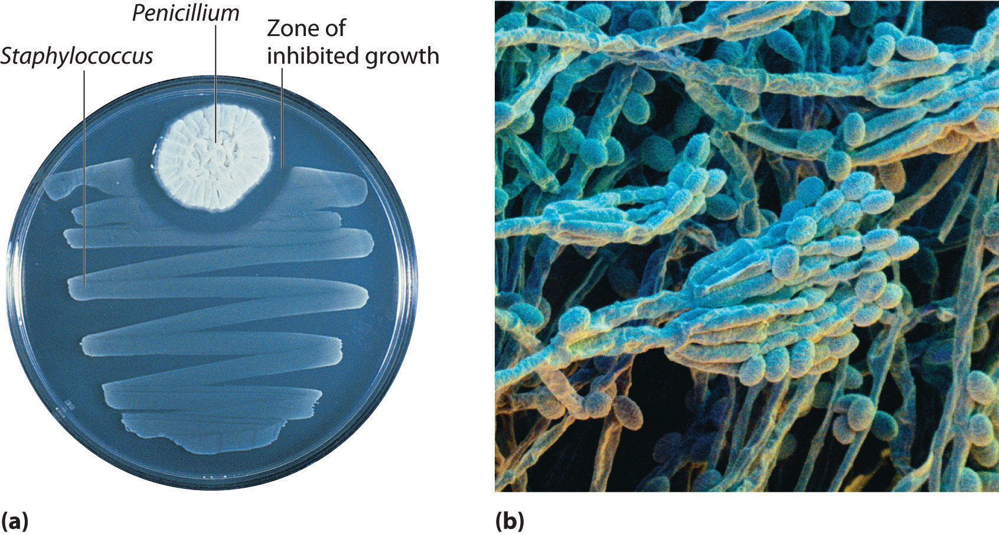
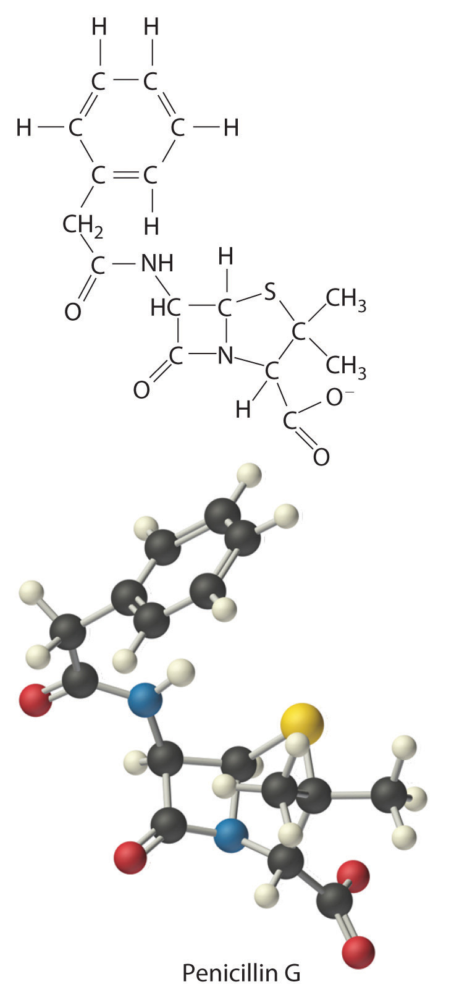
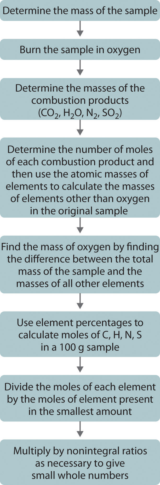
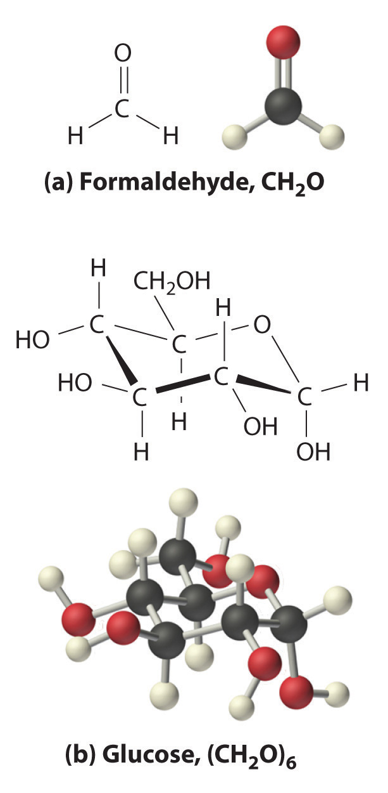

When a new chemical compound, such as a potential new pharmaceutical, is synthesized in the laboratory or isolated from a natural source, chemists determine its elemental composition, its empirical formula, and its structure to understand its properties. In this section, we focus on how to determine the empirical formula of a compound and then use it to determine the molecular formula if the molar mass of the compound is known.
The law of definite proportions states that a chemical compound always contains the same proportion of elements by mass; that is, the percent compositionThe percentage of each element present in a pure substance. With few exceptions, the percent composition of a chemical compound is constant (see law of definite proportions).—the percentage of each element present in a pure substance—is constant (although we now know there are exceptions to this law). For example, sucrose (cane sugar) is 42.11% carbon, 6.48% hydrogen, and 51.41% oxygen by mass. This means that 100.00 g of sucrose always contains 42.11 g of carbon, 6.48 g of hydrogen, and 51.41 g of oxygen. First we will use the molecular formula of sucrose (C12H22O11) to calculate the mass percentage of the component elements; then we will show how mass percentages can be used to determine an empirical formula.
According to its molecular formula, each molecule of sucrose contains 12 carbon atoms, 22 hydrogen atoms, and 11 oxygen atoms. A mole of sucrose molecules therefore contains 12 mol of carbon atoms, 22 mol of hydrogen atoms, and 11 mol of oxygen atoms. We can use this information to calculate the mass of each element in 1 mol of sucrose, which will give us the molar mass of sucrose. We can then use these masses to calculate the percent composition of sucrose. To three decimal places, the calculations are the following:
Equation 3.3
Thus 1 mol of sucrose has a mass of 342.297 g; note that more than half of the mass (175.989 g) is oxygen, and almost half of the mass (144.132 g) is carbon.
The mass percentage of each element in sucrose is the mass of the element present in 1 mol of sucrose divided by the molar mass of sucrose, multiplied by 100 to give a percentage. The result is shown to two decimal places:
You can check your work by verifying that the sum of the percentages of all the elements in the compound is 100%:
42.12% + 6.48% + 51.41% = 100.01%If the sum is not 100%, you have made an error in your calculations. (Rounding to the correct number of decimal places can, however, cause the total to be slightly different from 100%.) Thus 100.00 g of sucrose contains 42.12 g of carbon, 6.48 g of hydrogen, and 51.41 g of oxygen; to two decimal places, the percent composition of sucrose is indeed 42.12% carbon, 6.48% hydrogen, and 51.41% oxygen.
We could also calculate the mass percentages using atomic masses and molecular masses, with atomic mass units. Because the answer we are seeking is a ratio, expressed as a percentage, the units of mass cancel whether they are grams (using molar masses) or atomic mass units (using atomic and molecular masses).
Aspartame is the artificial sweetener sold as NutraSweet and Equal. Its molecular formula is C14H18N2O5.

Given: molecular formula and mass of sample
Asked for: mass percentage of all elements and mass of one element in sample
Strategy:
A Use atomic masses from the periodic table to calculate the molar mass of aspartame.
B Divide the mass of each element by the molar mass of aspartame; then multiply by 100 to obtain percentages.
C To find the mass of an element contained in a given mass of aspartame, multiply the mass of aspartame by the mass percentage of that element, expressed as a decimal.
Solution:
A We calculate the mass of each element in 1 mol of aspartame and the molar mass of aspartame, here to three decimal places:
Thus more than half the mass of 1 mol of aspartame (294.277 g) is carbon (168.154 g).
B To calculate the mass percentage of each element, we divide the mass of each element in the compound by the molar mass of aspartame and then multiply by 100 to obtain percentages, here reported to two decimal places:
As a check, we can add the percentages together:
57.14% + 6.16% + 9.52% + 27.18% = 100.00%If you obtain a total that differs from 100% by more than about ±1%, there must be an error somewhere in the calculation.
C The mass of carbon in 1.00 g of aspartame is calculated as follows:
Exercise
Calculate the mass percentage of each element in aluminum oxide (Al2O3). Then calculate the mass of aluminum in a 3.62 g sample of pure aluminum oxide.
Answer: 52.93% aluminum; 47.08% oxygen; 1.92 g Al
Just as we can use the empirical formula of a substance to determine its percent composition, we can use the percent composition of a sample to determine its empirical formula, which can then be used to determine its molecular formula. Such a procedure was actually used to determine the empirical and molecular formulas of the first antibiotic to be discovered: penicillin.
Antibiotics are chemical compounds that selectively kill microorganisms, many of which cause diseases. Although we may take antibiotics for granted today, penicillin was discovered only about 80 years ago. The subsequent development of a wide array of other antibiotics for treating many common diseases has contributed greatly to the substantial increase in life expectancy over the past 50 years. The discovery of penicillin is a historical detective story in which the use of mass percentages to determine empirical formulas played a key role.
In 1928, Alexander Fleming, a young microbiologist at the University of London, was working with a common bacterium that causes boils and other infections such as blood poisoning. For laboratory study, bacteria are commonly grown on the surface of a nutrient-containing gel in small, flat culture dishes. One day Fleming noticed that one of his cultures was contaminated by a bluish-green mold similar to the mold found on spoiled bread or fruit. Such accidents are rather common, and most laboratory workers would have simply thrown the cultures away. Fleming noticed, however, that the bacteria were growing everywhere on the gel except near the contaminating mold (part (a) in Figure 3.3 " "), and he hypothesized that the mold must be producing a substance that either killed the bacteria or prevented their growth. To test this hypothesis, he grew the mold in a liquid and then filtered the liquid and added it to various bacteria cultures. The liquid killed not only the bacteria Fleming had originally been studying but also a wide range of other disease-causing bacteria. Because the mold was a member of the Penicillium family (named for their pencil-shaped branches under the microscope) (part (b) in Figure 3.3 " "), Fleming called the active ingredient in the broth penicillin.
Figure 3.3 Penicillium
(a) Penicillium mold is growing in a culture dish; the photo shows its effect on bacterial growth. (b) In this photomicrograph of Penicillium, its rod- and pencil-shaped branches are visible. The name comes from the Latin penicillus, meaning “paintbrush.”
Although Fleming was unable to isolate penicillin in pure form, the medical importance of his discovery stimulated researchers in other laboratories. Finally, in 1940, two chemists at Oxford University, Howard Florey (1898–1968) and Ernst Chain (1906–1979), were able to isolate an active product, which they called penicillin G. Within three years, penicillin G was in widespread use for treating pneumonia, gangrene, gonorrhea, and other diseases, and its use greatly increased the survival rate of wounded soldiers in World War II. As a result of their work, Fleming, Florey, and Chain shared the Nobel Prize in Medicine in 1945.
As soon as they had succeeded in isolating pure penicillin G, Florey and Chain subjected the compound to a procedure called combustion analysis (described later in this section) to determine what elements were present and in what quantities. The results of such analyses are usually reported as mass percentages. They discovered that a typical sample of penicillin G contains 53.9% carbon, 4.8% hydrogen, 7.9% nitrogen, 9.0% sulfur, and 6.5% sodium by mass. The sum of these numbers is only 82.1%, rather than 100.0%, which implies that there must be one or more additional elements. A reasonable candidate is oxygen, which is a common component of compounds that contain carbon and hydrogen;Do not assume that the “missing” mass is always due to oxygen. It could be any other element. for technical reasons, however, it is difficult to analyze for oxygen directly. If we assume that all the missing mass is due to oxygen, then penicillin G contains (100.0% − 82.1%) = 17.9% oxygen. From these mass percentages, the empirical formula and eventually the molecular formula of the compound can be determined.
To determine the empirical formula from the mass percentages of the elements in a compound such as penicillin G, we need to convert the mass percentages to relative numbers of atoms. For convenience, we assume that we are dealing with a 100.0 g sample of the compound, even though the sizes of samples used for analyses are generally much smaller, usually in milligrams. This assumption simplifies the arithmetic because a 53.9% mass percentage of carbon corresponds to 53.9 g of carbon in a 100.0 g sample of penicillin G; likewise, 4.8% hydrogen corresponds to 4.8 g of hydrogen in 100.0 g of penicillin G; and so forth for the other elements. We can then divide each mass by the molar mass of the element to determine how many moles of each element are present in the 100.0 g sample:
Equation 3.4
Thus 100.0 g of penicillin G contains 4.49 mol of carbon, 4.8 mol of hydrogen, 0.56 mol of nitrogen, 0.28 mol of sulfur, 0.28 mol of sodium, and 1.12 mol of oxygen (assuming that all the missing mass was oxygen). The number of significant figures in the numbers of moles of elements varies between two and three because some of the analytical data were reported to only two significant figures.
These results tell us the ratios of the moles of the various elements in the sample (4.49 mol of carbon to 4.8 mol of hydrogen to 0.56 mol of nitrogen, and so forth), but they are not the whole-number ratios we need for the empirical formula—the empirical formula expresses the relative numbers of atoms in the smallest whole numbers possible. To obtain whole numbers, we divide the numbers of moles of all the elements in the sample by the number of moles of the element present in the lowest relative amount, which in this example is sulfur or sodium. The results will be the subscripts of the elements in the empirical formula. To two significant figures, the results are
Equation 3.5
The empirical formula of penicillin G is therefore C16H17N2NaO4S. Other experiments have shown that penicillin G is actually an ionic compound that contains Na+ cations and [C16H17N2O4S]− anions in a 1:1 ratio. The complex structure of penicillin G (Figure 3.4 "Structural Formula and Ball-and-Stick Model of the Anion of Penicillin G") was not determined until 1948.
Figure 3.4 Structural Formula and Ball-and-Stick Model of the Anion of Penicillin G
In some cases, one or more of the subscripts in a formula calculated using this procedure may not be integers. Does this mean that the compound of interest contains a nonintegral number of atoms? No; rounding errors in the calculations as well as experimental errors in the data can result in nonintegral ratios. When this happens, you must exercise some judgment in interpreting the results, as illustrated in Example 6. In particular, ratios of 1.50, 1.33, or 1.25 suggest that you should multiply all subscripts in the formula by 2, 3, or 4, respectively. Only if the ratio is within 5% of an integral value should you consider rounding to the nearest integer.
Calculate the empirical formula of the ionic compound calcium phosphate, a major component of fertilizer and a polishing agent in toothpastes. Elemental analysis indicates that it contains 38.77% calcium, 19.97% phosphorus, and 41.27% oxygen.
Given: percent composition
Asked for: empirical formula
Strategy:
A Assume a 100 g sample and calculate the number of moles of each element in that sample.
B Obtain the relative numbers of atoms of each element in the compound by dividing the number of moles of each element in the 100 g sample by the number of moles of the element present in the smallest amount.
C If the ratios are not integers, multiply all subscripts by the same number to give integral values.
D Because this is an ionic compound, identify the anion and cation and write the formula so that the charges balance.
Solution:
A A 100 g sample of calcium phosphate contains 38.77 g of calcium, 19.97 g of phosphorus, and 41.27 g of oxygen. Dividing the mass of each element in the 100 g sample by its molar mass gives the number of moles of each element in the sample:
B To obtain the relative numbers of atoms of each element in the compound, divide the number of moles of each element in the 100-g sample by the number of moles of the element in the smallest amount, in this case phosphorus:
C We could write the empirical formula of calcium phosphate as Ca1.501P1.000O4.002, but the empirical formula should show the ratios of the elements as small whole numbers. To convert the result to integral form, multiply all the subscripts by 2 to get Ca3.002P2.000O8.004. The deviation from integral atomic ratios is small and can be attributed to minor experimental errors; therefore, the empirical formula is Ca3P2O8.
D The calcium ion (Ca2+) is a cation, so to maintain electrical neutrality, phosphorus and oxygen must form a polyatomic anion. We know from Chapter 2 "Molecules, Ions, and Chemical Formulas" that phosphorus and oxygen form the phosphate ion (PO43−; see Table 2.4 "Common Polyatomic Ions and Their Names"). Because there are two phosphorus atoms in the empirical formula, two phosphate ions must be present. So we write the formula of calcium phosphate as Ca3(PO4)2.
Exercise
Calculate the empirical formula of ammonium nitrate, an ionic compound that contains 35.00% nitrogen, 5.04% hydrogen, and 59.96% oxygen by mass; refer to Table 2.4 "Common Polyatomic Ions and Their Names" if necessary. Although ammonium nitrate is widely used as a fertilizer, it can be dangerously explosive. For example, it was a major component of the explosive used in the 1995 Oklahoma City bombing.
Answer: N2H4O3 is NH4+NO3−, written as NH4NO3
One of the most common ways to determine the elemental composition of an unknown hydrocarbon is an analytical procedure called combustion analysis. A small, carefully weighed sample of an unknown compound that may contain carbon, hydrogen, nitrogen, and/or sulfur is burned in an oxygen atmosphere,Other elements, such as metals, can be determined by other methods. and the quantities of the resulting gaseous products (CO2, H2O, N2, and SO2, respectively) are determined by one of several possible methods. One procedure used in combustion analysis is outlined schematically in Figure 3.5 "Steps for Obtaining an Empirical Formula from Combustion Analysis", and a typical combustion analysis is illustrated in Example 7.
Figure 3.5 Steps for Obtaining an Empirical Formula from Combustion Analysis
Naphthalene, the active ingredient in one variety of mothballs, is an organic compound that contains carbon and hydrogen only. Complete combustion of a 20.10 mg sample of naphthalene in oxygen yielded 69.00 mg of CO2 and 11.30 mg of H2O. Determine the empirical formula of naphthalene.
Given: mass of sample and mass of combustion products
Asked for: empirical formula
Strategy:
A Use the masses and molar masses of the combustion products, CO2 and H2O, to calculate the masses of carbon and hydrogen present in the original sample of naphthalene.
B Use those masses and the molar masses of the elements to calculate the empirical formula of naphthalene.
Solution:
A Upon combustion, 1 mol of CO2 is produced for each mole of carbon atoms in the original sample. Similarly, 1 mol of H2O is produced for every 2 mol of hydrogen atoms present in the sample. The masses of carbon and hydrogen in the original sample can be calculated from these ratios, the masses of CO2 and H2O, and their molar masses. Because the units of molar mass are grams per mole, we must first convert the masses from milligrams to grams:
B To obtain the relative numbers of atoms of both elements present, we need to calculate the number of moles of each and divide by the number of moles of the element present in the smallest amount:
Dividing each number by the number of moles of the element present in the smaller amount gives
Thus naphthalene contains a 1.25:1 ratio of moles of carbon to moles of hydrogen: C1.25H1.0. Because the ratios of the elements in the empirical formula must be expressed as small whole numbers, multiply both subscripts by 4, which gives C5H4 as the empirical formula of naphthalene. In fact, the molecular formula of naphthalene is C10H8, which is consistent with our results.
Exercise
Answer:
The empirical formula gives only the relative numbers of atoms in a substance in the smallest possible ratio. For a covalent substance, we are usually more interested in the molecular formula, which gives the actual number of atoms of each kind present per molecule. Without additional information, however, it is impossible to know whether the formula of penicillin G, for example, is C16H17N2NaO4S or an integral multiple, such as C32H34N4Na2O8S2, C48H51N6Na3O12S3, or (C16H17N2NaO4S)n, where n is an integer. (The actual structure of penicillin G is shown in Figure 3.4 "Structural Formula and Ball-and-Stick Model of the Anion of Penicillin G".)
Consider glucose, the sugar that circulates in our blood to provide fuel for our bodies and especially for our brains. Results from combustion analysis of glucose report that glucose contains 39.68% carbon and 6.58% hydrogen. Because combustion occurs in the presence of oxygen, it is impossible to directly determine the percentage of oxygen in a compound by using combustion analysis; other more complex methods are necessary. If we assume that the remaining percentage is due to oxygen, then glucose would contain 53.79% oxygen. A 100.0 g sample of glucose would therefore contain 39.68 g of carbon, 6.58 g of hydrogen, and 53.79 g of oxygen. To calculate the number of moles of each element in the 100.0 g sample, we divide the mass of each element by its molar mass:
Equation 3.6
Once again, we find the subscripts of the elements in the empirical formula by dividing the number of moles of each element by the number of moles of the element present in the smallest amount:
The oxygen:carbon ratio is 1.018, or approximately 1, and the hydrogen:carbon ratio is approximately 2. The empirical formula of glucose is therefore CH2O, but what is its molecular formula?
Many known compounds have the empirical formula CH2O, including formaldehyde, which is used to preserve biological specimens and has properties that are very different from the sugar circulating in our blood. At this point, we cannot know whether glucose is CH2O, C2H4O2, or any other (CH2O)n. We can, however, use the experimentally determined molar mass of glucose (180 g/mol) to resolve this dilemma.
First, we calculate the formula mass, the molar mass of the formula unit, which is the sum of the atomic masses of the elements in the empirical formula multiplied by their respective subscripts. For glucose,
Equation 3.7
This is much smaller than the observed molar mass of 180 g/mol.
Second, we determine the number of formula units per mole. For glucose, we can calculate the number of (CH2O) units—that is, the n in (CH2O)n—by dividing the molar mass of glucose by the formula mass of CH2O:
Equation 3.8
Each glucose contains six CH2O formula units, which gives a molecular formula for glucose of (CH2O)6, which is more commonly written as C6H12O6. The molecular structures of formaldehyde and glucose, both of which have the empirical formula CH2O, are shown in Figure 3.6 "Structural Formulas and Ball-and-Stick Models of (a) Formaldehyde and (b) Glucose".
Figure 3.6 Structural Formulas and Ball-and-Stick Models of (a) Formaldehyde and (b) Glucose
Calculate the molecular formula of caffeine, a compound found in coffee, tea, and cola drinks that has a marked stimulatory effect on mammals. The chemical analysis of caffeine shows that it contains 49.18% carbon, 5.39% hydrogen, 28.65% nitrogen, and 16.68% oxygen by mass, and its experimentally determined molar mass is 196 g/mol.
Given: percent composition and molar mass
Asked for: molecular formula
Strategy:
A Assume 100 g of caffeine. From the percentages given, use the procedure given in Example 6 to calculate the empirical formula of caffeine.
B Calculate the formula mass and then divide the experimentally determined molar mass by the formula mass. This gives the number of formula units present.
C Multiply each subscript in the empirical formula by the number of formula units to give the molecular formula.
Solution:
A We begin by dividing the mass of each element in 100.0 g of caffeine (49.18 g of carbon, 5.39 g of hydrogen, 28.65 g of nitrogen, 16.68 g of oxygen) by its molar mass. This gives the number of moles of each element in 100 g of caffeine.
To obtain the relative numbers of atoms of each element present, divide the number of moles of each element by the number of moles of the element present in the least amount:
These results are fairly typical of actual experimental data. None of the atomic ratios is exactly integral but all are within 5% of integral values. Just as in Example 6, it is reasonable to assume that such small deviations from integral values are due to minor experimental errors, so round to the nearest integer. The empirical formula of caffeine is thus C4H5N2O.
B The molecular formula of caffeine could be C4H5N2O, but it could also be any integral multiple of this. To determine the actual molecular formula, we must divide the experimentally determined molar mass by the formula mass. The formula mass is calculated as follows:
Dividing the measured molar mass of caffeine (196 g/mol) by the calculated formula mass gives
C There are two C4H5N2O formula units in caffeine, so the molecular formula must be (C4H5N2O)2 = C8H10N4O2. The structure of caffeine is as follows:
Exercise
Calculate the molecular formula of Freon-114, which has 13.85% carbon, 41.89% chlorine, and 44.06% fluorine. The experimentally measured molar mass of this compound is 171 g/mol. Like Freon-11, Freon-114 is a commonly used refrigerant that has been implicated in the destruction of the ozone layer.
Answer: C2Cl2F4
The empirical formula of a substance can be calculated from the experimentally determined percent composition, the percentage of each element present in a pure substance by mass. In many cases, these percentages can be determined by combustion analysis. If the molar mass of the compound is known, the molecular formula can be determined from the empirical formula.
What is the relationship between an empirical formula and a molecular formula?
Construct a flowchart showing how you would determine the empirical formula of a compound from its percent composition.
Please be sure you are familiar with the topics discussed in Essential Skills 2 (Section 3.7 "Essential Skills 2") before proceeding to the Numerical Problems.
What is the mass percentage of water in each hydrate?
What is the mass percentage of water in each hydrate?
Which of the following has the greatest mass percentage of oxygen—KMnO4, K2Cr2O7, or Fe2O3?
Which of the following has the greatest mass percentage of oxygen—ThOCl2, MgCO3, or NO2Cl?
Calculate the percent composition of the element shown in bold in each compound.
Calculate the percent composition of the element shown in bold in each compound.
A sample of a chromium compound has a molar mass of 151.99 g/mol. Elemental analysis of the compound shows that it contains 68.43% chromium and 31.57% oxygen. What is the identity of the compound?
The percentages of iron and oxygen in the three most common binary compounds of iron and oxygen are given in the following table. Write the empirical formulas of these three compounds.
| Compound | % Iron | % Oxygen | Empirical Formula |
|---|---|---|---|
| 1 | 69.9 | 30.1 | |
| 2 | 77.7 | 22.3 | |
| 3 | 72.4 | 27.6 |
What is the mass percentage of water in each hydrate?
What is the mass percentage of water in each hydrate?
Two hydrates were weighed, heated to drive off the waters of hydration, and then cooled. The residues were then reweighed. Based on the following results, what are the formulas of the hydrates?
| Compound | Initial Mass (g) | Mass after Cooling (g) |
|---|---|---|
| NiSO4·xH2O | 2.08 | 1.22 |
| CoCl2·xH2O | 1.62 | 0.88 |
Which contains the greatest mass percentage of sulfur—FeS2, Na2S2O4, or Na2S?
Given equal masses of each, which contains the greatest mass percentage of sulfur—NaHSO4 or K2SO4?
Calculate the mass percentage of oxygen in each polyatomic ion.
Calculate the mass percentage of oxygen in each polyatomic ion.
The empirical formula of garnet, a gemstone, is Fe3Al2Si3O12. An analysis of a sample of garnet gave a value of 13.8% for the mass percentage of silicon. Is this consistent with the empirical formula?
A compound has the empirical formula C2H4O, and its formula mass is 88 g. What is its molecular formula?
Mirex is an insecticide that contains 22.01% carbon and 77.99% chlorine. It has a molecular mass of 545.59 g. What is its empirical formula? What is its molecular formula?
How many moles of CO2 and H2O will be produced by combustion analysis of 0.010 mol of styrene?
How many moles of CO2, H2O, and N2 will be produced by combustion analysis of 0.0080 mol of aniline?
How many moles of CO2, H2O, and N2 will be produced by combustion analysis of 0.0074 mol of aspartame?
How many moles of CO2, H2O, N2, and SO2 will be produced by combustion analysis of 0.0060 mol of penicillin G?
Combustion of a 34.8 mg sample of benzaldehyde, which contains only carbon, hydrogen, and oxygen, produced 101 mg of CO2 and 17.7 mg of H2O.
Salicylic acid is used to make aspirin. It contains only carbon, oxygen, and hydrogen. Combustion of a 43.5 mg sample of this compound produced 97.1 mg of CO2 and 17.0 mg of H2O.
Given equal masses of the following acids, which contains the greatest amount of hydrogen that can dissociate to form H+—nitric acid, hydroiodic acid, hydrocyanic acid, or chloric acid?
Calculate the formula mass or the molecular mass of each compound.
Calculate the formula mass or the molecular mass of each compound.
Given equal masses of butane, cyclobutane, and propene, which contains the greatest mass of carbon?
Given equal masses of urea [(NH2)2CO] and ammonium sulfate, which contains the most nitrogen for use as a fertilizer?
To two decimal places, the percentages are:
% oxygen: KMnO4, 40.50%; K2Cr2O7, 38.07%; Fe2O3, 30.06%
To two decimal places, the percentages are:
Cr2O3.
To two decimal places, the percentages are:
NiSO4 · 6H2O and CoCl2 · 6H2O
NaHSO4
C4H8O2
hydrocyanic acid, HCN
To two decimal places, the values are:
Urea